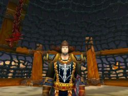

1er Août 2018
3ème jour
de la Décade du Lapin ( Lune de l'Esprit ) -
Accueil
Histoire
Chronologie officielle
Programme à venir
Récits
Légendes de Kirin Tor
Personnages
Célébrités
Guildes
Outils
Calendrier
Calendrier Illustré
Mod d'interface
Informations
Historiens
FAQ
Liens
Crédits
Les légendes de Kirin Tor
JYP
Mail
:
==> Afficher les personnages de JYP
x

Sexe
: Homme
Race
: Humain
Faction
: Alliance
Formation
: Démoniste
Plus d'infos sur x >>>
Lire les 5 récits de x >>>
xy
Sexe
: Femme
Race
: Tauren
Faction
: Horde
Formation
: Chasseur
Plus d'infos sur xy >>>